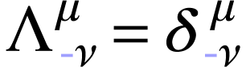

GO BACK
| Note on Weinberg's textbooks
on QFT |
|
Notation. The Latin indices such as
 ,
,  ,
,  , etc.,
typically span the three spatial coordinate labels, commonly denoted as
1, 2, 3. On the other hand, Greek indices like
, etc.,
typically span the three spatial coordinate labels, commonly denoted as
1, 2, 3. On the other hand, Greek indices like  ,
,  , and
so forth, usually range over the four spacetime coordinate labels,
specifically 1, 2, 3, 0, where
, and
so forth, usually range over the four spacetime coordinate labels,
specifically 1, 2, 3, 0, where  represents the
time coordinate. Indices that appear twice are usually summed unless
specified otherwise. The spacetime metric, denoted by , is a diagonal matrix with elements
represents the
time coordinate. Indices that appear twice are usually summed unless
specified otherwise. The spacetime metric, denoted by , is a diagonal matrix with elements  and
and  . The
d'Alembertian is represented as
. The
d'Alembertian is represented as  and defined by
the equation
and defined by
the equation  , where
, where  is the Laplacian given by
is the Laplacian given by  . The ‘ Levi-Civita tensor,’ symbolized
by
. The ‘ Levi-Civita tensor,’ symbolized
by  , is an entirely
antisymmetric entity with
, is an entirely
antisymmetric entity with  .
Spatial vectors in three dimensions are marked by boldface characters. A
unit vector corresponding to any vector is shown with a hat, as in . A dot over a variable signifies
its time derivative. The Dirac matrices adhere
to
.
Spatial vectors in three dimensions are marked by boldface characters. A
unit vector corresponding to any vector is shown with a hat, as in . A dot over a variable signifies
its time derivative. The Dirac matrices adhere
to  , and
, and  , while
, while  .
The step function
.
The step function  yields a value of +1 when
yields a value of +1 when  and 0 when .
For a matrix or vector
and 0 when .
For a matrix or vector  , the
complex conjugate, transpose, and Hermitian adjoint are represented by
, the
complex conjugate, transpose, and Hermitian adjoint are represented by
 ,
,  , and
, and  respectively. The
Hermitian adjoint of an operator is marked as
, except when an asterisk
emphasizes that a vector or matrix of operators is not transposed. Terms
like +H.c. or +c.c. appended to equations indicate the addition of the
Hermitian adjoint or complex conjugate of preceding terms. A Dirac
spinor with a bar over it is defined as . Apart from in Chapter 1,
units are normalized such that
respectively. The
Hermitian adjoint of an operator is marked as
, except when an asterisk
emphasizes that a vector or matrix of operators is not transposed. Terms
like +H.c. or +c.c. appended to equations indicate the addition of the
Hermitian adjoint or complex conjugate of preceding terms. A Dirac
spinor with a bar over it is defined as . Apart from in Chapter 1,
units are normalized such that  and the speed of
light are set to one. The fine structure constant is represented as
and the speed of
light are set to one. The fine structure constant is represented as
 , calculated as , approximately ,
where
, calculated as , approximately ,
where  is the rationalized charge of the
electron. Parenthetical numbers next to quoted numerical figures signify
the uncertainty in the last digits. Unless otherwise stated,
experimental data is sourced from ‘Review of Particle
Properties,’ Phys. Rev. D50, 1173 (1994).
is the rationalized charge of the
electron. Parenthetical numbers next to quoted numerical figures signify
the uncertainty in the last digits. Unless otherwise stated,
experimental data is sourced from ‘Review of Particle
Properties,’ Phys. Rev. D50, 1173 (1994).
Chapter 1
Historical
Introduction
Our deep engagement with contemporary physics can make it challenging to
grasp the struggles faced by physicists in the not-so-distant past or to
learn from their experiences. Simultaneously, understanding our own
history is a double-edged sword; it may hinder the ongoing need to
logically rebuild physical theories. The aim is to logically structure
quantum field theory, focusing on the inferential pathway that stems
from the principles of special relativity and quantum mechanics. This
method diverts us from the historical sequence in which the subject
actually evolved. For instance, it is historically accurate to say that
quantum field theory partly originated from studies of relativistic wave
equations, like the Maxwell, Klein-Gordon, and Dirac equations.
Typically, courses and literature on quantum field theory introduce
these equations early on and give them considerable importance. However,
a more effective starting point would be Wigner's definition of
particles as representations of the inhomogeneous Lorentz group. This
perspective was first published in 1939 and was not widely influential
for some time. We commence with particles and address wave equations
later on.
This is not to imply that particles are inherently more foundational
than fields. For a long period post-1950, it was generally accepted that
the laws of nature manifest as a quantum theory of fields. We begin with
particles, not because they are more fundamental, but because our
knowledge about them is more certain and more directly derived
from the principles of quantum mechanics and special relativity. If a
physical system were found that could not be accounted for by a quantum
field theory, it would be groundbreaking; if it violated the principles
of quantum mechanics and relativity, it would be revolutionary.
There has been a shift in perspective that questions the foundational
status of quantum field theory. The root theory may not be about fields
or particles at all but could involve something entirely different, like
strings. From this standpoint, quantum electrodynamics and other quantum
field theories that we hold in high regard are just ‘effective
field theories’, low-energy approximations to a more foundational
theory. The efficacy of our field theories does not lie in their being
ultimate truths but in the fact that any relativistic quantum theory
will resemble a field theory when applied to particles at sufficiently
low energies. Hence, if we aim to understand the nature of quantum field
theories, we must start with particles.
However, it is crucial not to completely disregard our historical
context. This chapter will consequently provide a historical overview of
quantum field theory up until 1949, when it took its modern form. We
intend to prevent history from encroaching on the physics discussion
except in this chapter.
This chapter is not designed to serve as an exhaustive introduction to
quantum field theory and is not necessary for comprehending the
subsequent content of the book. Some might even choose to skip to the
following chapter and revisit the historical context later.
A note regarding notation. To retain some historical context, we will
include explicit factors of and  (and occasionally even ) in
this chapter. However, to align with contemporary physics literature, I
will adopt the more modern rationalized electrostatic units for charge.
In this system, the fine structure constant is
approximated as and is defined as
(and occasionally even ) in
this chapter. However, to align with contemporary physics literature, I
will adopt the more modern rationalized electrostatic units for charge.
In this system, the fine structure constant is
approximated as and is defined as  . In the chapters that follow, I will
predominantly use the ‘natural’ system of units, wherein
ℏ and are simply set to one.
. In the chapters that follow, I will
predominantly use the ‘natural’ system of units, wherein
ℏ and are simply set to one.
1.1Relativistic Wave
Mechanics
Wave mechanics initially emerged as a framework based on special
relativity, with figures like Louis de Broglie and Erwin
Schrödinger drawing substantial inspiration from this theory.
However, as it became apparent that a relativistic quantum theory of a
fixed number of particles was unattainable, the focus shifted towards
quantum field theory. Nonetheless, the constructs of relativistic wave
mechanics remained influential components in the formal structure of
quantum field theory and served as benchmarks that any viable field
theory needed to replicate.
The idea that material particles could be described as waves in the same
way as photons was initially proposed by Louis de Broglie in 1923. The
primary insight for this notion came from Lorentz invariance, alongside
similarities with radiation. If particles are represented by a wave with
a phase at position and time
in the form , and if this
phase maintains Lorentz invariance, then the vector
and frequency must undergo transformations
similar to those of and , and by extension, similar to
and  . This necessitates that
and should exhibit the
same dependence on velocity as and , and thus should be proportional to them with
a consistent constant of proportionality. For photons, there already
existed the Einstein relation ,
making it a logical step to propose that for material particles,
. This necessitates that
and should exhibit the
same dependence on velocity as and , and thus should be proportional to them with
a consistent constant of proportionality. For photons, there already
existed the Einstein relation ,
making it a logical step to propose that for material particles,
The group velocity  of the wave is found to be
equal to the velocity of the particle, allowing wave packets to stay
aligned with the particle they represent.
of the wave is found to be
equal to the velocity of the particle, allowing wave packets to stay
aligned with the particle they represent.
By positing that a closed orbit encompasses an integer number of
particle wavelengths  , de
Broglie successfully derived the earlier quantization conditions set
forth by Niels Bohr and Arnold Sommerfeld. These conditions, while
enigmatic, had been effective in explaining atomic spectra.
Additionally, both de Broglie and Walter Elsaser proposed that de
Broglie's wave theory could be experimentally validated by observing
interference phenomena in electron scattering from crystals. This was
subsequently confirmed a few years later through experiments conducted
by Clinton Joseph Davisson and Lester H. Germer. Nevertheless, it
remained uncertain how to adapt the de Broglie relations (1.1.1)
for particles that are not free, such as an electron subjected to a
general Coulomb field.
, de
Broglie successfully derived the earlier quantization conditions set
forth by Niels Bohr and Arnold Sommerfeld. These conditions, while
enigmatic, had been effective in explaining atomic spectra.
Additionally, both de Broglie and Walter Elsaser proposed that de
Broglie's wave theory could be experimentally validated by observing
interference phenomena in electron scattering from crystals. This was
subsequently confirmed a few years later through experiments conducted
by Clinton Joseph Davisson and Lester H. Germer. Nevertheless, it
remained uncertain how to adapt the de Broglie relations (1.1.1)
for particles that are not free, such as an electron subjected to a
general Coulomb field.
In the subsequent phase of quantum mechanics history, wave mechanics was
sidestepped with the advent of matrix mechanics, which was developed by
Werner Heisenberg, Max Born, Pascual Jordan, and Wolfgang Pauli between
1925 and 1926. A key motivation for this development was the emphasis on
incorporating only observable quantities into the theory, such as energy
levels or rates of emission and absorption. Heisenberg's 1925 paper
commenced with the declaration: ‘The present paper seeks to
establish a basis for theoretical quantum mechanics founded exclusively
upon relationships between quantities that in principle are
observable.’ This brand of positivism would resurface
intermittently in the history of quantum field theory, exemplified by
events like the introduction of the S-matrix by John Wheeler and
Heisenberg (see Chapter ?) and the resurgence of dispersion
theory in the 1950s (see Chap ?). However, contemporary
quantum field theory deviates significantly from this ideal. A detailed
discussion of matrix mechanics would digress too much from our current
topic.
Commonly understood is the fact that wave mechanics was rejuvenated by
Erwin Schrödinger. In his sequence of papers from 1926, he
initially proposed the well-known non-relativistic wave equation, using
it thereafter to revisit the findings of matrix mechanics. It was only
in the sixth section of his fourth paper that a relativistic wave
equation was introduced. However, according to Dirac, the actual
historical progression differed: Schrödinger initially arrived at
the relativistic equation but grew disheartened when it produced
incorrect fine structure results for hydrogen. Months later, he realized
that the non-relativistic version of his initial relativistic equation
was still valuable, despite the flaws in the relativistic equation
itself. By the time Schrödinger opted to publish his relativistic
wave equation, it had already been independently unearthed by Oskar
Klein and Walter Gordon. Consequently, it is commonly referred to as the
‘Klein-Gordon equation’.
Initially, Schrödinger obtained his relativistic wave equation by
observing that for a ‘Lorentz electron’ with mass  and charge in an external vector
potential and Coulomb potential
and charge in an external vector
potential and Coulomb potential  , the Hamiltonian
, the Hamiltonian  and
momentum are connected as follows:
and
momentum are connected as follows:
 |
(1.1.2) |
For a free particle characterized by a plane wave  , the de Broglie relations (1.1.1)
emerge when making these identifications:
, the de Broglie relations (1.1.1)
emerge when making these identifications:
 |
(1.1.3) |
Here, is a useful notation, later introduced by
Dirac, representing . Drawing
on a formal analogy, Schrödinger hypothesized that an electron in
external fields , would be represented by a wave function  that satisfies an equation obtained using the same substitutions in (1.1.2):
that satisfies an equation obtained using the same substitutions in (1.1.2):
 |
(1.1.4) |
Specifically, for hydrogen's stationary states, we have  and , and
and , and  carries a time-dependence of ,
making equation (1.1.4):
carries a time-dependence of ,
making equation (1.1.4):

Solutions that meet acceptable boundary conditions are found for energy
values:
where  is the ‘fine structure
constant’, approximately ;
is the ‘fine structure
constant’, approximately ;
 is a positive integer, and
is a positive integer, and  , the orbital angular momentum in units of
, is an integer such that
, the orbital angular momentum in units of
, is an integer such that
 . The
term aligns well with the broad features of the hydrogen spectrum, such
as the Lyman, Balmer series, etc. According to Dirac, this alignment
inspired Schrödinger to formulate his non-relativistic wave
equation. Contrarily, the
. The
term aligns well with the broad features of the hydrogen spectrum, such
as the Lyman, Balmer series, etc. According to Dirac, this alignment
inspired Schrödinger to formulate his non-relativistic wave
equation. Contrarily, the  term did not agree
with the accurate fine structure measurements made by Friedrich Paschen.
term did not agree
with the accurate fine structure measurements made by Friedrich Paschen.
(To be continue...)
Chapter 2
Relativistic Quantum
Mechanics
The perspective presented argues that quantum field theory exists in its
current form due to its unique capability to harmonize quantum mechanics
with special relativity, under some conditions (what are these
conditions or qualifications?), our initial endeavor is to explore how
symmetries, such as Lorentz invariance, manifest within a quantum
context.
2.1Quantum Mechanics
First, let's start with some positive information: quantum field theory
rests on the same foundational quantum mechanics developed by
Schrödinger, Heisenberg, Pauli, Born, and other pioneers in
1925–1926. This framework has been continuously employed in
various fields such as atomic, molecular, nuclear, and condensed matter
physics. This section offers merely a succinct summary of quantum
mechanics, presented in the expanded form outlined by Dirac. The
following texts are simly copied from Weinberg's textbook so that the
equation number can be aligned with the textbook. Also, one might also
read Wightman axioms in the constructive quantum field theory.
-
Physical states are represented by rays in Hilbert space. A Hilbert
space is a kind of complex vector space; that is, if and are vectors in the space
(often called 'state-vectors') then so is  , for arbitrary complex numbers . It has a norm: for any pair of vectors
there is a complex number
, for arbitrary complex numbers . It has a norm: for any pair of vectors
there is a complex number  ,
such that
,
such that
The norm also satisfies a positivity
condition:  , and vanishes
if and only if . (There
are also certain technical assumptions that allow us to take limits
of vectors within Hilbert space.) A ray is a set of
normalized vectors (i.e.
, and vanishes
if and only if . (There
are also certain technical assumptions that allow us to take limits
of vectors within Hilbert space.) A ray is a set of
normalized vectors (i.e.  )
with and
)
with and  belonging
to the same ray if
belonging
to the same ray if  ,
where is an arbitrary complex number with
,
where is an arbitrary complex number with
 .
.
-
Observables are represented by Hermitian operators. These are
mappings  of Hilbert space into itself,
linear in the sense that
of Hilbert space into itself,
linear in the sense that
 |
(2.1.4) |
and satisfying the reality condition  ,
where for any linear operator the adjoint
,
where for any linear operator the adjoint
 is defined by
is defined by
 |
(2.1.5) |
(There are also technical assumptions about the continuity of  as a function of .)
A state represented by a ray
as a function of .)
A state represented by a ray  has a definite
value for the observable represented by an
operator if vectors
belonging to this ray are eigenvectors of
with eigenvalue :
has a definite
value for the observable represented by an
operator if vectors
belonging to this ray are eigenvectors of
with eigenvalue :
 |
(2.1.6) |
An elementary theorem tells us that for
Hermitian, is real, and eigenvectors with
different s are
orthogonal.
-
If a system is in a state represented by a ray , and an experiment is done to test whether
it is in any one of the different states represented by mutually
orthogonal rays  (for instance, by measuring
one or more observables) then the probability of finding it in the
state represented by
(for instance, by measuring
one or more observables) then the probability of finding it in the
state represented by  is
is
 |
(2.1.7) |
where and  are any
vectors belongs to rays and , respectively. (A pair of rays is said to
be orthogonal if the state-vectors from the two rays have vanishing
scalar products.) Another elementary theorem gives a total
probability unity:
are any
vectors belongs to rays and , respectively. (A pair of rays is said to
be orthogonal if the state-vectors from the two rays have vanishing
scalar products.) Another elementary theorem gives a total
probability unity:
if the state-vectors form a complete set.
2.2Symmetries
A symmetry transformation can be thought of as a shift in perspective
that does not affect the outcomes of potential experiments. If an
observer perceives a system in a state denoted
by a ray or  or
or  ..., a corresponding observer
..., a corresponding observer  scrutinizing the same system would view it in a different state,
symbolized by a ray
scrutinizing the same system would view it in a different state,
symbolized by a ray  or
or
or
or  ..., respectively. However, both
observers must ascertain the same probabilities:
..., respectively. However, both
observers must ascertain the same probabilities:
 |
(2.2.1) |
This condition is necessary but not sufficient for a ray
transformation to qualify as a symmetry; additional conditions will be
elaborated upon in the following chapter. Wigner proved a significant
theorem in the early 1930s, stating that for any such transformation
 , an operator
, an operator  can be defined in the Hilbert space. If
is a vector in ray , then
can be defined in the Hilbert space. If
is a vector in ray , then
 belongs to ray .
The operator can either be unitary and linear:
belongs to ray .
The operator can either be unitary and linear:
|
|
 |
(2.2.2) |
|
|
 |
(2.2.3) |
or antiunitary and antilinear:
|
|
 |
(2.2.4) |
|
|
|
(2.2.5) |
It is worth noting that Wigner's original proof is not entirely
comprehensive; a more thorough proof is provided in the appendix at the
end of this chapter.
As previously stated, the adjoint of a linear operator  is determined by
is determined by
This definition does not apply to an antilinear operator since the
right-hand side of (2.2.6) would be linear in , while the left-hand side is antilinear in
. For an antilinear operator
, the adjoint is instead
specified as:
 |
(2.2.7) |
Given this definition, the criteria for either unitarity or
antiunitarity can both be expressed as:
 |
(2.2.8) |
There exists a trivial symmetry transformation ℛ→ℛ,
represented by the identity operator  .
This operator is naturally unitary and linear. Continuity dictates that
any symmetry operation (like a rotation, translation, or Lorentz
transformation) that can be reduced to a trivial transformation by
continuously adjusting certain parameters (such as angles, distances, or
velocities) must be characterized by a linear unitary operator , as opposed to one that is
antilinear and antiunitary. (Symmetries represented by antiunitary
antilinear operators are less common in physics; they all entail a
reversal in the direction of time flow. See Section ? for
more details.)
.
This operator is naturally unitary and linear. Continuity dictates that
any symmetry operation (like a rotation, translation, or Lorentz
transformation) that can be reduced to a trivial transformation by
continuously adjusting certain parameters (such as angles, distances, or
velocities) must be characterized by a linear unitary operator , as opposed to one that is
antilinear and antiunitary. (Symmetries represented by antiunitary
antilinear operators are less common in physics; they all entail a
reversal in the direction of time flow. See Section ? for
more details.)
Specifically, a symmetry transformation that is nearly trivial on an
infinitesimal scale can be depicted by a linear unitary operator that is
infinitesimally close to the identity operator:
Here,  is a real infinitesimal. For to be both unitary and linear,
needs to be Hermitian and linear, making it a potential observable. In
fact, many (if not all) physical observables, like angular momentum or
momentum, are derived from symmetry transformations in this manner.
is a real infinitesimal. For to be both unitary and linear,
needs to be Hermitian and linear, making it a potential observable. In
fact, many (if not all) physical observables, like angular momentum or
momentum, are derived from symmetry transformations in this manner.
The set of symmetry transformations possesses specific characteristics
that categorize it as a group. If  is a
transformation converting rays to
is a
transformation converting rays to  , and
, and  is another
transformation that maps to
is another
transformation that maps to  , then the outcome of executing both
transformations consecutively is yet another symmetry transformation,
denoted as , that transforms
into .
Additionally, any symmetry transformation that
changes into has an
inverse, expressed as
, then the outcome of executing both
transformations consecutively is yet another symmetry transformation,
denoted as , that transforms
into .
Additionally, any symmetry transformation that
changes into has an
inverse, expressed as  , which
reverts back to .
Moreover, there exists an identity transformation,
, which
reverts back to .
Moreover, there exists an identity transformation,  , which leaves rays unaltered.
, which leaves rays unaltered.
The unitary or antiunitary operators  that
correspond to these symmetry transformations emulate this group
structure, albeit with added complexity because
that
correspond to these symmetry transformations emulate this group
structure, albeit with added complexity because  operators act on vectors in Hilbert space instead of on rays. If transforms into , then applying
operators act on vectors in Hilbert space instead of on rays. If transforms into , then applying  to a
vector in must result in
a vector
to a
vector in must result in
a vector  in .
If then maps this ray to ,
in .
If then maps this ray to ,  must also belong to , as must
must also belong to , as must  . Therefore, the vectors can only differ by a phase
factor
. Therefore, the vectors can only differ by a phase
factor  , as given by:
, as given by:
 |
(2.2.10) |
Moreover, barring a notable exception, the linearity (or antilinearity)
of specifies that these phases are
state-independent. To prove this, let us consider two non-proportional
vectors  and
and  and apply
Equation (2.2.10) to the state:
and apply
Equation (2.2.10) to the state:
Every unitary or antiunitary operator has an inverse (its adjoint),
which is also either unitary or antiunitary. Upon left-multiplying
Equation (2.2.11) by  ,
we arrive at:
,
we arrive at:
As and are linearly
independent, it follows that
 |
(2.2.13) |
Consequently, the phase in Equation (2.2.10) is
state-independent, leading to the operator relation:
 |
(2.2.14) |
When , this indicates that
constitutes a representation of the group of
symmetry transformations. For arbitrary phases  , we refer to it as a ‘projective
representation’ or a representation ‘up to a phase’.
Whether the Lie group structure allows for state vectors to furnish an
ordinary or projective representation can not be inferred from the group
structure alone but will become apparent later.
, we refer to it as a ‘projective
representation’ or a representation ‘up to a phase’.
Whether the Lie group structure allows for state vectors to furnish an
ordinary or projective representation can not be inferred from the group
structure alone but will become apparent later.
The exception to the reasoning that concluded in Equation (2.2.14)
lies in the possibility that the system may not be preparable in a state
represented by  . For example,
it is generally considered unfeasible to prepare a system in a
superposition of states with total angular momenta that are integers and
half-integers. In such scenarios, we refer to the presence of a
‘superselection rule’ between different categories of
states. As a result, the phases could be
contingent on which class of states the operators
and
. For example,
it is generally considered unfeasible to prepare a system in a
superposition of states with total angular momenta that are integers and
half-integers. In such scenarios, we refer to the presence of a
‘superselection rule’ between different categories of
states. As a result, the phases could be
contingent on which class of states the operators
and  are acting upon. Further details about these
phases and projective representations will be discussed in Section ?. It will be shown that any symmetry group featuring
projective representations can be extended (without altering its
physical meaning) to allow for all its representations to be
non-projective, i.e., with .
Until we reach Section ?, we will proceed with the
assumption that such an extension has been applied, and will take in (2.2.14). Also, the existence of
spinor is partially derived from the ambiguity that arises when taking
absolute values.
are acting upon. Further details about these
phases and projective representations will be discussed in Section ?. It will be shown that any symmetry group featuring
projective representations can be extended (without altering its
physical meaning) to allow for all its representations to be
non-projective, i.e., with .
Until we reach Section ?, we will proceed with the
assumption that such an extension has been applied, and will take in (2.2.14). Also, the existence of
spinor is partially derived from the ambiguity that arises when taking
absolute values.
In physics, a specific type of group known as a connected Lie group
holds special significance. These are groups comprised of
transformations  , defined by
a finite collection of real, continuous parameters, symbolized as
, defined by
a finite collection of real, continuous parameters, symbolized as  . Each group element is linked to
the identity element through a continuous path within the group itself.
The multiplication rule for the group is expressed as
. Each group element is linked to
the identity element through a continuous path within the group itself.
The multiplication rule for the group is expressed as
 |
(2.2.15) |
where  is a function of both
and
is a function of both
and  . If
denotes the coordinates of the identity, then
. If
denotes the coordinates of the identity, then
 |
(2.2.16) |
must hold true. In the case of such continuous groups, the
transformations must be represented in the physical Hilbert space by
unitary operators  , rather
than antiunitary ones. These unitary operators, at least in a finite
vicinity of the identity, can be expressed by a power series as
, rather
than antiunitary ones. These unitary operators, at least in a finite
vicinity of the identity, can be expressed by a power series as
 |
(2.2.17) |
Here,  , and so on, are
Hermitian operators independent of .
Assuming that provides a standard
(non-projective) representation of the transformation group, meaning
, and so on, are
Hermitian operators independent of .
Assuming that provides a standard
(non-projective) representation of the transformation group, meaning
 |
(2.2.18) |
we can expand this in terms of and  . In accordance with Equation (2.2.16),
the second-order expansion of should be
. In accordance with Equation (2.2.16),
the second-order expansion of should be
 |
(2.2.19) |
Here,  are real coefficients. Note that the
presence of any
are real coefficients. Note that the
presence of any  or
or  terms
would be in conflict with Equation (2.2.16). Following
this, Equation (2.2.18) can be articulated as:
terms
would be in conflict with Equation (2.2.16). Following
this, Equation (2.2.18) can be articulated as:
|
|
 |
|
|
|
 |
|
|
|
|
(2.2.20) |
On both sides of Equation (2.2.20), terms of order 1, , ,
, and
correspond without issue. However, when focusing on the
terms, a non-trivial condition emerges:
 |
(2.2.21) |
This reveals that if we know the group structure, specifically the
function  and its corresponding quadratic
coefficient , we can
determine the second-order terms of using the
first-order generators
and its corresponding quadratic
coefficient , we can
determine the second-order terms of using the
first-order generators  .
However, there's a requirement for consistency: the operator
.
However, there's a requirement for consistency: the operator  has to be symmetric in and , as it's the second derivative of
with respect to and
has to be symmetric in and , as it's the second derivative of
with respect to and
 . Therefore, Equation (2.2.21) necessitates that
. Therefore, Equation (2.2.21) necessitates that
 |
(2.2.22) |
where  are a set of real constants termed as
structure constants, defined by
are a set of real constants termed as
structure constants, defined by
This kind of commutation relationship is termed a Lie algebra. In a
later section, we will essentially demonstrate that this commutation
relation (2.2.22) is the sole condition needed to
perpetuate this computation. In other words, the complete power series
for can be generated from an endless chain of
equations like Equation (2.2.21), as long as we are aware
of the first-order terms, namely the generators . While this does not mean
operators are uniquely identified for all based
solely on , it does signify
that they are uniquely specified within a finite vicinity of the
identity coordinate , such
that Equation (2.2.15) holds true if
and lie within this region. The discussion about
extending this to all will take place in a
subsequent section.
There is a particular scenario of considerable relevance that will recur
frequently in our discussions. Assume the function
is simply additive for some or all of the coordinates , as expressed by:
 |
(2.2.24) |
This situation is applicable, for example, in the context of spacetime
translations or for rotations about a single fixed axis (but not for
both simultaneously). In this special case, the coefficients from Equation (2.2.19) become zero, and
likewise, the structure constants in Equation (2.2.23) also
vanish. Consequently, the generators are commutative, denoted by:
 |
(2.2.25) |
Such a group is termed as Abelian. Under these conditions, computing
for all becomes
straightforward. According to Equations (2.2.18) and (2.2.24), for any integer  ,
we can express:
,
we can express:

By taking the limit as approaches infinity and
retaining only the first-order term in  ,
we obtain:
,
we obtain:

and consequently,
2.3Quantum Lorentz
Transformations
Einstein's principle of relativity asserts the equivalence of specific
'inertial' frames of reference, setting it apart from the Galilean
principle of relativity adhered to by Newtonian mechanics. The
distinction comes from the transformation equations that link coordinate
systems across different inertial frames. Given that
represents the coordinates in one inertial frame—where  are Cartesian spatial coordinates and
is a time coordinate (assuming the speed of light equals one)—the
coordinates
are Cartesian spatial coordinates and
is a time coordinate (assuming the speed of light equals one)—the
coordinates  in another inertial frame must
satisfy:
in another inertial frame must
satisfy:
or, alternatively,
In these equations, is a diagonal matrix with
elements defined as:
 |
(2.3.3) |
The summation convention applies: any index like
and in Equation (2.3.2) appearing
twice, once as a superscript and once as a subscript, is summed over.
These transformations have the unique feature that the speed of light
remains consistent—in our chosen units, equal to one—across
all inertial frames. A light wave with unit speed satisfies , or in terms of the equation  , which also implies
and thus
, which also implies
and thus  .
.
Any coordinate transformation fulfilling Eq. (2.3.2) is linear, as denoted by:
 |
(2.3.4) |
Here,  are arbitrary constants, and is a constant matrix that meets the criteria:
are arbitrary constants, and is a constant matrix that meets the criteria:
 |
(2.3.5) |
For certain applications, it's advantageous to express the Lorentz
transformation condition using an alternate formulation. The matrix possesses an inverse, designated as  , which coincidentally has the same diagonal
components:
, which coincidentally has the same diagonal
components:  and .
and .
By judiciously inserting parentheses and multiplying Eq. (2.3.5)
by  , we get:
, we get:
Further multiplying by the inverse of the matrix  yields:
yields:
 |
(2.3.6) |
These transformations constitute a group. When we initially apply a
Lorentz transformation as per Eq. (2.3.4), and then follow
it with another Lorentz transformation ,
such that
we find that the overall transformation effect is identical to
performing a Lorentz transformation  as described
by
as described
by
 |
(2.3.7) |
Here, it's worth noting that if and both meet the conditions of Eq. (2.3.5),  will also be a Lorentz transformation. The bar
notation is simply used to distinguish one Lorentz transformation from
another. Correspondingly, the transformations on
physical states obey the composition law
will also be a Lorentz transformation. The bar
notation is simply used to distinguish one Lorentz transformation from
another. Correspondingly, the transformations on
physical states obey the composition law
 |
(2.3.8) |
Calculating the determinant of Eq. (2.3.5), we arrive at
This implies that has an inverse, denoted as
 , which as per Eq. (2.3.5)
takes the form
, which as per Eq. (2.3.5)
takes the form
 |
(2.3.10) |
According to Eq. (2.3.8), the inverse of the transformation
turns out to be  ,
and naturally, the identity transformation is represented by .
,
and naturally, the identity transformation is represented by .
Based on the dialogue in the prior section, the transformations give rise to a unitary linear transformation acting
on vectors in the physical Hilbert space, represented as  . These operators obey
a composition law articulated as
. These operators obey
a composition law articulated as
It's worth noting that to prevent the emergence of a phase factor on the
right-hand side of Eq. (2.3.11), it's generally required to
extend the Lorentz group. The suitable extension for accomplishing this
is discussed in Section ?.
The complete set of transformations is formally
referred to as the inhomogeneous Lorentz group, also known as the
Poincaré group. This group has several significant subgroups.
First, transformations with  naturally constitute
a subgroup, described by
naturally constitute
a subgroup, described by
which is termed the homogeneous Lorentz group. Additionally, from Eq.
(2.3.9), it's evident that  can be
either
can be
either  or
or  ;
transformations having
;
transformations having  inherently make up a
subgroup of either the homogeneous or inhomogeneous Lorentz groups.
Further scrutiny of the 00-components of Eqs. (2.3.5) and
(2.3.6) yields
inherently make up a
subgroup of either the homogeneous or inhomogeneous Lorentz groups.
Further scrutiny of the 00-components of Eqs. (2.3.5) and
(2.3.6) yields
where ranges over 1, 2, and 3. This shows that
either  or .
Transformations where constitute a subgroup.
Observe that if and
or .
Transformations where constitute a subgroup.
Observe that if and  are
two such matrices
are
two such matrices  , then
, then

According to Eq. (2.3.13), the three-vector  has a length of
has a length of  ,
and similarly, the three-vector has a length of
,
and similarly, the three-vector has a length of
 . Therefore, the scalar
product of these two three-vectors has an upper limit given by
. Therefore, the scalar
product of these two three-vectors has an upper limit given by
leading to

This subgroup, characterized by and , is identified as the proper orthochronous
Lorentz group. As one cannot smoothly transition from
to  , or from
to , any Lorentz
transformation derived from the identity through a continuous variation
of parameters must share the same sign for and
as the identity, and thus must be a member of
the proper orthochronous Lorentz group.
, or from
to , any Lorentz
transformation derived from the identity through a continuous variation
of parameters must share the same sign for and
as the identity, and thus must be a member of
the proper orthochronous Lorentz group.
Every Lorentz transformation falls into one of two categories: it is
either proper and orthochronous, or it can be expressed as the
composition of an element from the proper orthochronous Lorentz group
and one of the discrete transformations  or
or  or . Here,
represents the space inversion, which has
non-zero elements given by
or . Here,
represents the space inversion, which has
non-zero elements given by
 |
(2.3.15) |
while stands for the time-reversal matrix, with
non-zero elements defined as
 |
(2.3.16) |
Therefore, a comprehensive understanding of the entire Lorentz group can
be achieved by studying its proper orthochronous subgroup, along with
the concepts of space inversion and time-reversal. The exploration of
space inversion and time-reversal will be carried out separately in
Section ?. Until that point, our focus will remain on
either the homogeneous or inhomogeneous proper orthochronous Lorentz
group.
2.4The Poincaré
Algebra
As discussed in Section 2.2, many essential attributes of
any Lie symmetry group are encapsulated in the properties of the
elements in the vicinity of the identity element. In the context of the
inhomogeneous Lorentz group, the identity transformation is given by
 and .
Therefore, we aim to explore transformations that can be written as
and .
Therefore, we aim to explore transformations that can be written as
 |
(2.4.1) |
where both  and
and  are
infinitesimal. The Lorentz condition, expressed as equation (2.3.5),
can be rewritten as
are
infinitesimal. The Lorentz condition, expressed as equation (2.3.5),
can be rewritten as

In this book, we adopt the convention that indices can be raised or
lowered by contracting with or :

If we retain only the first-order terms in  in
the Lorentz condition (2.3.5), we find that this condition
simplifies to the antisymmetry of
in
the Lorentz condition (2.3.5), we find that this condition
simplifies to the antisymmetry of  :
:
 |
(2.4.2) |
An antisymmetric second-rank tensor in four dimensions has  independent components. Coupled with the four components
of , an inhomogeneous Lorentz
transformation is thus characterized by
independent components. Coupled with the four components
of , an inhomogeneous Lorentz
transformation is thus characterized by  parameters.
parameters.
Because  maps any ray onto itself, it must be
proportional to the unit operator, and by a choice of phase may be made
equal to it. Excluding the presence of superselection rules, we can
eliminate the chance that this proportionality factor varies depending
on the state acted upon by .
This exclusion follows the same logic we applied in Section 2.2
to dismiss the idea that phases in projective representations of
symmetry groups might depend on the states they act upon. In cases where
superselection rules are relevant, it could be necessary to adjust the
phase factors of depending on the sector it acts
on.
maps any ray onto itself, it must be
proportional to the unit operator, and by a choice of phase may be made
equal to it. Excluding the presence of superselection rules, we can
eliminate the chance that this proportionality factor varies depending
on the state acted upon by .
This exclusion follows the same logic we applied in Section 2.2
to dismiss the idea that phases in projective representations of
symmetry groups might depend on the states they act upon. In cases where
superselection rules are relevant, it could be necessary to adjust the
phase factors of depending on the sector it acts
on.
For an infinitesimal Lorentz transformation as described by equation (2.4.1),  must be equal to the unit
operator augmented by terms that are linear in
must be equal to the unit
operator augmented by terms that are linear in
 and .
We express this relationship as
and .
We express this relationship as
In this equation, and  are operators that are independent of and , and the ellipsis signifies terms
of higher order in and/or . For to be unitary,
operators and must be
Hermitian:
are operators that are independent of and , and the ellipsis signifies terms
of higher order in and/or . For to be unitary,
operators and must be
Hermitian:
 |
(2.4.4) |
Given that is antisymmetric, its coefficient
can also be taken to be antisymmetric:
 |
(2.4.5) |
As we will elaborate on later,  ,
and
,
and  are the components of the momentum
operators;
are the components of the momentum
operators;  , and
, and  are the angular momentum vector components; and
are the angular momentum vector components; and  is the energy operator or Hamiltonian. These
identifications of angular-momentum generators are necessitated by the
commutation relations of
is the energy operator or Hamiltonian. These
identifications of angular-momentum generators are necessitated by the
commutation relations of  .
However, the commutation relations don't prescribe a definite sign for
.
However, the commutation relations don't prescribe a definite sign for
 and ,
making the sign choice for the
and ,
making the sign choice for the  term in equation
(2.4.3) a matter of convention. The alignment of this
choice with the standard definition of the Hamiltonian
will be clarified in Section ?.
term in equation
(2.4.3) a matter of convention. The alignment of this
choice with the standard definition of the Hamiltonian
will be clarified in Section ?.
We turn our attention to the Lorentz transformation characteristics of
and .
We focus on the composite expression
where and are parameters
of a new transformation, distinct from and . According to Equation (2.3.11),
the operation results in  , signifying that
, signifying that  serves as
the inverse of .
Consequently, from (2.3.11), we obtain:
serves as
the inverse of .
Consequently, from (2.3.11), we obtain:
 |
(2.4.6) |
To the first order in and , this leads to:
|
|
|
|
|
|
 |
(2.4.7) |
By matching the coefficients of and on both sides of the equation and employing (2.3.10),
we arrive at:
In the case of homogeneous Lorentz transformations where , these transformation laws simply indicate
that behaves as a tensor and
as a vector. For pure translations, where  ,
these rules convey that remains invariant under
translation, while does not. Specifically, the
alteration in the spatial components of due to a
spatial translation corresponds to the conventional change in angular
momentum when the point of reference for measuring angular momentum is
shifted.
,
these rules convey that remains invariant under
translation, while does not. Specifically, the
alteration in the spatial components of due to a
spatial translation corresponds to the conventional change in angular
momentum when the point of reference for measuring angular momentum is
shifted.
Next, we consider the application of rules (2.4.8) and (2.4.9) to an infinitesimal transformation. Specifically, we
take and  ,
where the infinitesimals
,
where the infinitesimals  and
are not related to the earlier and . Utilizing Equation (2.4.3) and
retaining only first-order terms in and , Equations (2.4.8)
and (2.4.9) simplify to:
and
are not related to the earlier and . Utilizing Equation (2.4.3) and
retaining only first-order terms in and , Equations (2.4.8)
and (2.4.9) simplify to:
|
|
 |
(2.4.10) |
|
|
 |
(2.4.11) |
By isolating the coefficients of and on both sides of these equations, we derive the
commutation relations:
|
|
 |
(2.4.12) |
|
|
|
(2.4.13) |
|
|
|
(2.4.14) |
These equations define the Lie algebra of the Poincaré group.
In quantum mechanics, particular importance is given to those operators
that are conserved, meaning they commute with the energy operator  . A review of Equations (2.4.13)
and (2.4.14) reveals that these conserved operators include
the momentum three-vector
. A review of Equations (2.4.13)
and (2.4.14) reveals that these conserved operators include
the momentum three-vector
and the angular-momentum three-vector
 |
(2.4.16) |
as well as the energy itself. The other
generators constitute what is termed the 'boost' three-vector
 |
(2.4.17) |
These are not conserved, which is why their eigenvalues are not employed
to characterize physical states. Expressed in a three-dimensional
notation, the commutation relations (2.4.12), (2.4.13),
and (2.4.14) can be represented as:
|
|
 |
(2.4.18) |
|
|
 |
(2.4.19) |
|
|
|
(2.4.20) |
|
|
 |
(2.4.21) |
|
|
|
(2.4.22) |
|
|
 |
(2.4.23) |
|
|
 |
(2.4.24) |
Here,  take the values 1, 2, and 3, and
take the values 1, 2, and 3, and  is the completely antisymmetric quantity where
is the completely antisymmetric quantity where  . The commutation relation (2.4.18) is identified as belonging to the angular-momentum
operator.
. The commutation relation (2.4.18) is identified as belonging to the angular-momentum
operator.
The subgroup of pure translations  is a part of
the inhomogeneous Lorentz group, and its group multiplication rule, as
defined by (2.3.7), is
is a part of
the inhomogeneous Lorentz group, and its group multiplication rule, as
defined by (2.3.7), is
 |
(2.4.25) |
This multiplication rule is additive, similar to what is described in
Equation (2.2.24). Employing Equation (2.4.3)
and revisiting the arguments that led to Equation (2.2.26),
we determine that finite translations in the physical Hilbert space are
represented as
 |
(2.4.26) |
Likewise, a rotation  through an angle
through an angle  around the direction specified by
around the direction specified by  is represented in the physical Hilbert space as
is represented in the physical Hilbert space as
Contrasting the Poincaré algebra with the Lie algebra of the
Galilean group, the symmetry group for Newtonian mechanics, offers
fascinating insights. While it is possible to derive the Galilean
algebra beginning with its transformation rules and using the same
methodology we used for the Poincaré algebra, a simpler path
exists. Since we already possess Eqs. (2.4.18)-(2.4.24),
we can more conveniently obtain the Galilean algebra as the
Inönü-Wigner contraction of the Poincaré algebra in the
low-velocity limit. For a set of particles with an average mass and velocity ,
we anticipate the momentum and angular-momentum operators to be of the
order , . On the flip side, the energy operator is composed of a total mass
and a non-mass energy  (kinetic and potential),
which are of the order
(kinetic and potential),
which are of the order  ,
,
 . Examining Eqs. (2.4.18)-(2.4.24) reveals that in the limit where , the commutation relations simplify to:
. Examining Eqs. (2.4.18)-(2.4.24) reveals that in the limit where , the commutation relations simplify to:

where scales as  .
It's noteworthy that in Hilbert space, the sequence of operations
involving a translation
.
It's noteworthy that in Hilbert space, the sequence of operations
involving a translation  and a 'boost' does not yield the expected transformation
and a 'boost' does not yield the expected transformation  . Instead, we have:
. Instead, we have:

The emergence of the phase factor  indicates that
we are dealing with a projective representation, which comes with a
superselection rule that precludes the mixing of states with different
masses. In this aspect, the mathematical framework of the
Poincaré group is less complex than that of the Galilean group.
Nonetheless, it is entirely feasible to extend the Galilean group
formally by introducing an additional generator to its Lie algebra. This
new generator would commute with all existing generators and have
eigenvalues corresponding to the masses of the different states. In such
a scenario, physical states would be represented through an ordinary,
rather than projective, representation of the augmented symmetry group.
While this might seem like a minor change in notation, it effectively
eliminates the necessity for a mass superselection rule within the
reinterpreted Galilean group.
indicates that
we are dealing with a projective representation, which comes with a
superselection rule that precludes the mixing of states with different
masses. In this aspect, the mathematical framework of the
Poincaré group is less complex than that of the Galilean group.
Nonetheless, it is entirely feasible to extend the Galilean group
formally by introducing an additional generator to its Lie algebra. This
new generator would commute with all existing generators and have
eigenvalues corresponding to the masses of the different states. In such
a scenario, physical states would be represented through an ordinary,
rather than projective, representation of the augmented symmetry group.
While this might seem like a minor change in notation, it effectively
eliminates the necessity for a mass superselection rule within the
reinterpreted Galilean group.
2.5One-Particle States
We turn our attention to the categorization of single-particle states
based on their transformation properties under the inhomogeneous Lorentz
group.
Given that the components of the energy-momentum four-vector commute
among themselves, it is logical to represent physical state-vectors
using eigenvectors of the four-momentum. To do this, we introduce a
label to account for any additional degrees of
freedom, leading us to consider state-vectors  such that
such that
 |
(2.5.1) |
For more complex states, like those comprising multiple free particles,
the label would need to accommodate both
continuous and discrete values. In this discussion, we are focusing
solely on one-particle states, whose definition includes that the label
is purely discrete. It is worth noting that
specific bound states of two or more particles, like the ground state of
a hydrogen atom, are also considered one-particle states in this
context. While such states are not elementary particles, the distinction
between composite and elementary particles is irrelevant for our current
purposes.
Equations (2.5.1) and (2.4.26) inform us about
the transformation behavior of these states under homogeneous Lorentz
transformations.
Applying equation (2.4.9), we find that when a quantum
homogeneous Lorentz transformation  or
equivalently acts on , it yields a four-momentum eigenvector with
eigenvalue
or
equivalently acts on , it yields a four-momentum eigenvector with
eigenvalue  :
:
|
|
 |
|
|
|
 |
(2.5.2) |
Therefore,  must be expressible as a linear
combination of state-vectors :
must be expressible as a linear
combination of state-vectors :
Generally, one might be able to construct suitable linear combinations
of such that the matrix
becomes block-diagonal. In other words, with
values within a single block could constitute a
representation of the inhomogeneous Lorentz group on their own. It makes
sense to associate the states of a particular particle type with
components of an irreducible representation of the inhomogeneous Lorentz
group, meaning it can't be further broken down in this manner.
It should be noted that different types of particles may be related to
isomorphic representations, which means their matrices
could be identical or transformed into one another by a similarity
transformation. In certain scenarios, particle types might be defined as
irreducible representations of larger groups, which include the
inhomogeneous proper orthochronous Lorentz group as a subgroup. For
example, for massless particles whose interactions are invariant under
space inversion, it's common to treat all components of an irreducible
representation of the inhomogeneous Lorentz group as a single particle
type.
The next step in our investigation is to elucidate the structure of the
coefficients in irreducible representations of
the inhomogeneous Lorentz group.
For our objectives, it's crucial to recognize that the only functions of
 left invariant by all proper orthochronous
Lorentz transformations
left invariant by all proper orthochronous
Lorentz transformations  are the invariant square
, and for
are the invariant square
, and for  , also the sign of
, also the sign of  . Therefore, for each specific value of
. Therefore, for each specific value of  , and when ,
each sign of , we can select
a 'standard' four-momentum denoted as
, and when ,
each sign of , we can select
a 'standard' four-momentum denoted as  .
Any within this category can then be represented
as
.
Any within this category can then be represented
as
 |
(2.5.4) |
where  is a particular standard Lorentz
transformation depending on and, implicitly, on
our chosen standard .
Consequently, the states having momentum can be defined as
is a particular standard Lorentz
transformation depending on and, implicitly, on
our chosen standard .
Consequently, the states having momentum can be defined as
where is a numerical normalization factor, the
specifics of which will be determined later. Up to this juncture, no
details have been provided about how the labels
are connected across varying momenta; Equation (2.5.5) now
addresses this absence.
When applying an arbitrary homogeneous Lorentz transformation to equation (2.5.5), we obtain:
|
|
 |
|
|
|
|
(2.5.6) |
The purpose of this last step is to show that the Lorentz transformation
 first maps to , then to , and finally back to .
This transformation belongs to a subgroup within the homogeneous Lorentz
group, characterized by Lorentz transformations
first maps to , then to , and finally back to .
This transformation belongs to a subgroup within the homogeneous Lorentz
group, characterized by Lorentz transformations  that keep invariant:
that keep invariant:
 |
(2.5.7) |
This subgroup is termed the little group. For any
that satisfies Equation (2.5.7), we find that:
The coefficients serve as a representation of
the little group. Specifically, for any elements  , the relationship
, the relationship

is satisfied, and hence
 |
(2.5.9) |
Particularly, we can apply Equation (2.5.8) to the
little-group transformation
 |
(2.5.10) |
resulting in:

or, recalling definition (2.5.5):
 |
(2.5.11) |
Aside from normalization issues, the task of identifying the
coefficients in transformation rule (2.5.3)
has now been distilled down to finding the representations of the little
group. This technique, which involves deriving representations of a
larger group like the inhomogeneous Lorentz group from the
representations of its little group, is known as the method of induced
representations.
Table 2.5.1 provides a suitable selection for the standard
four-momentum along with the associated little
group for different categories of four-momenta.
Out of the six categories of four-momenta, only types (a), (c), and (f)
have any recognized implications for physical states. For class (f)
— where —it
pertains to the vacuum state, which is essentially unchanged by . Our subsequent discussion will be
confined to cases (a) and (c), which correspond to particles with mass
 and massless particles, respectively.
and massless particles, respectively.
Now is an appropriate time to discuss the normalization of these states.
Employing the standard orthonormalization procedure from quantum
mechanics, we can select states with standard momentum
to be orthonormal as denoted by the equation:
 |
(2.5.12) |
(Let me remark that is the standard momentum and
runs over all possibilities such that  , so, for example, we can not use
(2.5.12) to calculate
, so, for example, we can not use
(2.5.12) to calculate  .
Also
.
Also  and are normalized
such that (2.5.12) holds) The presence of the delta
function arises because and
and are normalized
such that (2.5.12) holds) The presence of the delta
function arises because and  are eigenstates of a Hermitian operator with eigenvalues
are eigenstates of a Hermitian operator with eigenvalues  and ,
respectively. As a direct outcome, the representation of the little
group in Eqs. (2.5.8) and (2.5.11) must be
unitary.
and ,
respectively. As a direct outcome, the representation of the little
group in Eqs. (2.5.8) and (2.5.11) must be
unitary.
 |
(2.5.13) |
For and ,
the little groups  and do
not possess any non-trivial finite-dimensional unitary representations.
Hence, if there were states with a specific momentum
having or that
non-trivially transform under the little group, an infinite number of
such states would be required.
and do
not possess any non-trivial finite-dimensional unitary representations.
Hence, if there were states with a specific momentum
having or that
non-trivially transform under the little group, an infinite number of
such states would be required.
Regarding the scalar products for generic momenta, the unitarity of the
operator as expressed in Eqs. (2.5.5)
and (2.5.11) provides the following formula for the scalar
product:

Here,  (Hence, ).
(Let me remark that
(Hence, ).
(Let me remark that  here is just the one in
here is just the one in

although here we use
This is correct as

which gives
thereby getting
Since as well, the delta function is proportional to  .
The presence of
.
The presence of  implies that only the
coefficient when
implies that only the
coefficient when  matters, as otherwise the inner
product vanishes. Hence, with
matters, as otherwise the inner
product vanishes. Hence, with  ,
we have
,
we have
 |
(2.5.14) |
The next step involves determining the proportionality factor that links
to .
When integrating an arbitrary scalar function
over four-momenta subject to  and
and  (corresponding to cases (a) or (c)), the Lorentz-invariant
integral takes the form:
(corresponding to cases (a) or (c)), the Lorentz-invariant
integral takes the form:

Here,  is the step function:
for
is the step function:
for  and for
and for  .
.
When integrating over the 'mass shell'  ,
the invariant volume element becomes:
,
the invariant volume element becomes:
 |
(2.5.15) |
By the definition of the delta function,

we find that the invariant delta function is
Given that and are
connected to and through
a Lorentz transformation , we
arrive at the following equation:

Consequently, the scalar product becomes:
 |
(2.5.17) |
The normalization constant is occasionally set
to . However, in doing so,
one would need to account for the term in scalar
products. In this context, we will use the more common convention where:
 |
(2.5.18) |
With this choice, the scalar product simplifies to:
 |
(2.5.19) |
Next, we turn our attention to the two physically relevant cases:
particles with mass and particles with zero
mass.
2.5.1Mass Positive-Definite
In this context, the little group is represented by the
three-dimensional rotation group. Its unitary representations can be
decomposed into a direct sum of irreducible unitary representations,
denoted by  , having
dimensions of
, having
dimensions of  , where takes values 0,
, where takes values 0,  ,
1, etc. These representations can be constructed from the standard
matrices for infinitesimal rotations ,
where is infinitesimal. The representation is
given by:
,
1, etc. These representations can be constructed from the standard
matrices for infinitesimal rotations ,
where is infinitesimal. The representation is
given by:
|
|
|
(2.5.20) |
|
|
 |
|
|
|
 |
(2.5.21) |
|
|
 |
(2.5.22) |
where varies over the set . For a particle having mass
and spin , Equation (2.5.11)
is transformed to:
 |
(2.5.23) |
Here, the little-group element  — often
referred to as the Wigner rotation — is given by Equation (2.5.10) as:
— often
referred to as the Wigner rotation — is given by Equation (2.5.10) as:
(To be continue...)